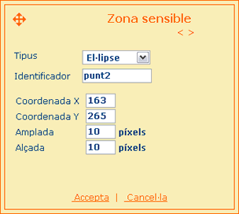

| zones PREGUNTA D'UNIR PUNTS |
|
Com funciona? Aquest control conté un llistat amb tots els punts de la imatge que es poden unir. Aquests punts es poden crear, editar i/o eliminar, mitjançant els botons que apareixen sota aquesta llista. La pantalla que es carrega en aquest moment permet editar la zona del punt seleccionat. Els paràmetres que es poden configurar per cada zona són els següents:
|
|
Exemple A continuació es mostra un exemple de punt en forma d'el·lipse, amb identificador 'punt2' que apareixerà a les coordenades (163,265).  |